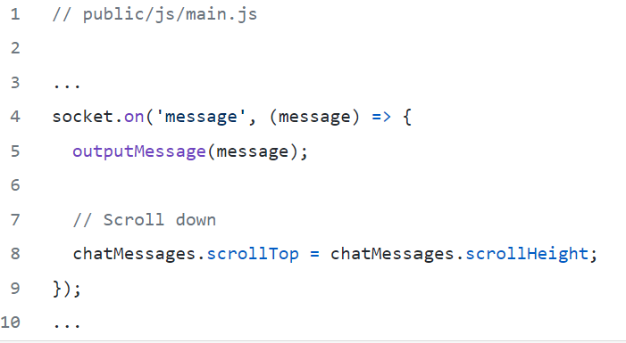

QuackChat – Creating a Real Time Chat App
Note:The terms with * are explained in the Refference table
‘QuackChat’ is an online chatting room application which can be used by us to meet new friends all over the world and share knowledge and experience among us.
This app is build using Node.js* and Websockets*.Node.js is a JavaScript runtime* built on Chrome's V8 JavaScript engine.HTTP* is a first-class citizen in Node.js, designed with streaming* and low latency* in mind. This makes Node.js well suited for the foundation of a web library or framework.WebSocket is a computer communications protocol, providing full-duplex communication channels over a single TCP* connection. The WebSocket API* is an advanced technology that makes it possible to open a two-way interactive communication session between the user's browser and a server. With this API, we can send messages to a server and receive event-driven* responses without having to poll the server for a reply. In this tutorial , we will learn to build a real time chat application.
Prerequisites
Before following this tutorial, you need the following:
- • Knowledge about basic web framework(HTML,CSS,Javascript)*.
- • Node.js*
- • Express*
- • Socket.io*
- • Nodemon*
- • Moment*
Setting up Project and Creating Express Server
1. Create the project directory and initialize the node project. Run this command on your terminal:
mkdir Quack Chat && cd Quack Chat && npm init --y
2. Open your code editor, and run this command to install the dependencies:
npm install express moment socket.io
3. Then to install Nodemon as a dev dependency and run this command:
npm install -D nodemon
4. Add some scripts to the package.json file. Replace the properties of the script JSON* object with this code snippet:

5. Create an index.js file in the root directory. This will be the entry point of our app.
Add these lines of code:
const express = require('express')
const app = express()
const PORT = 8000 || process.env.PORT
app.listen(PORT, () => console.log(`App is live on port ${PORT}`))
6. Then start your dev server with this command:
npm run dev
Creating the frontend
1. Set up your server to serve static assets such as HTML, CSS and JavaScript files. Modify index.js with the code snippet below:
const path = require('path')
app.use(express.static(path.join(__dirname, 'public')))
2. Here, we will specify that we want to serve static assets from the public directory. Next, create the public directory directly within the project root. Inside public directory, create an index.html file with the following content:
<!DOCTYPE html>
<html lang="en">
<head>
<meta charset="UTF-8" />
<meta name="viewport" content="width=device-width, initial-scale=1.0" />
<meta http-equiv="X-UA-Compatible" content="ie=edge" />
<link
rel="stylesheet"
href="https://cdnjs.cloudflare.com/ajax/libs/font-awesome/5.12.1/css/all.min.css"
integrity="sha256-mmgLkCYLUQbXn0B1SRqzHar6dCnv9oZFPEC1g1cwlkk="
crossorigin="anonymous"
/>
<link rel="stylesheet" href="css/style.css" />
<title>QuackChat
</head>
<body>
<div class="join-container">
<header class="join-header">
<h1>QuackChat
</header>
<main class="join-main">
<form action="chat.html">
<div class="form-control">
<label for="email">Email Address
<input
type="email"
name="email"
id="email"
placeholder="Enter email address..."
required
/>
</div>
<div class="form-control">
<label for="username">Username
<input
type="text"
name="username"
id="username"
placeholder="Enter username..."
required
/>
</div>
<div class="form-control">
<label for="room">Chat Channel
<select name="room" id="room">
<option value="Business">Business
<option value="Technology">Technology
<option value="Sport">Sports
<option value="news">International News
</select>
</div>
<div class="flex">
<button type="submit" class="btn">Login to Chat
</div>
</form>
</main>
</div>
</body>
</html>Index.js file serves as the homepage/login screen to our chat application. To be begin chatting, users have to provide an email address, a username, and a room/channel they want to join.
Inside css directory, create an style.css file
:root {
--dark-color-a: #32a8fb;
--dark-color-b: rgb(62, 227, 205);
--light-color: #43bad8;
--success-color: #65ce65;
--error-color: #df3832;
}
* {
box-sizing: border-box;
margin: 0;
padding: 0;
}
body {
font-family: 'Roboto', sans-serif;
font-size: 16px;
background: var(--light-color);
margin: 20px;
}
ul {
list-style: none;
}
a {
text-decoration: none;
}
.btn {
cursor: pointer;
padding: 5px 15px;
background: var(--light-color);
color:rgb(113, 107, 226);
border: 0;
font-size: 17px;
border-radius: 4px;
}
/* Chat Page */
.chat-container {
max-width: 1100px;
background: rgb(113, 107, 226);
margin: 30px auto;
overflow: hidden;
}
.chat-header {
background: var(--dark-color-a);
color: rgb(113, 107, 226);
border-top-left-radius: 5px;
border-top-right-radius: 5px;
padding: 15px;
display: flex;
align-items: center;
justify-content: space-between;
}
.chat-main {
display: grid;
grid-template-columns: 1fr 3fr;
}
.chat-sidebar {
background: var(--dark-color-b);
color:white;
padding: 20px 20px 60px;
overflow-y: scroll;
}
.chat-sidebar h2 {
font-size: 20px;
background: rgba(0, 0, 0, 0.1);
padding: 10px;
margin-bottom: 20px;
}
.chat-sidebar h3 {
margin-bottom: 15px;
}
.chat-sidebar ul li {
padding: 10px 0;
border-top: .7px solid;
border-bottom: .7px solid;
}
.chat-sidebar::-webkit-scrollbar {
width: 1em;
}
.chat-sidebar::-webkit-scrollbar-track {
-webkit-box-shadow: inset 0 0 6px rgba(0,0,0,0.3);
box-shadow: inset 0 0 6px rgba(0,0,0,0.3);
}
.chat-sidebar::-webkit-scrollbar-thumb {
background-color: darkgrey;
outline: 1px solid slategrey;
}
.chat-messages {
padding: 30px;
max-height: 500px;
overflow-y: scroll;
background-image: url('../img/chat-bg.jpg');
background-position: center;
background-size: contain;
}
.chat-messages .message {
padding: 10px;
margin-bottom: 15px;
background-color: var(--light-color);
border-radius: 5px;
}
.chat-messages .message .meta {
font-size: 15px;
font-weight: bold;
color: var(--dark-color-b);
opacity: 0.7;
margin-bottom: 7px;
display: flex;
}
.chat-messages .message .meta span {
color: #777;
margin-left: auto;
}
.chat-form-container {
padding: 20px 30px;
background-color: var(--dark-color-a);
}
.chat-form-container form {
display: flex;
}
.chat-form-container input[type='text'] {
border-radius: 15px;
border: none;
font-size: 16px;
padding: 10px;
height: 40px;
flex: 1;
outline: none;
}
button.btn-plane {
width: 50px;
border-radius: 50px;
border: none;
background: none;
cursor: pointer;
}
i.fas.fa-paper-plane{
font-size: 1.5rem;
color: white;
outline: none;
}
/* Join Page */
.join-container {
max-width: 500px;
margin: 80px auto;
color: #fff;
}
.join-header {
text-align: center;
padding: 20px;
background: var(--dark-color-a);
border-top-left-radius: 5px;
border-top-right-radius: 5px;
}
.join-main {
padding: 30px 40px;
background: var(--dark-color-b);
border-bottom-left-radius: 5px;
border-bottom-right-radius: 5px;
}
.join-main p {
margin-bottom: 20px;
}
.join-main .form-control {
margin-bottom: 20px;
}
.join-main label {
display: block;
margin-bottom: 5px;
}
.join-main input[type='text'] {
font-size: 16px;
padding: 5px;
height: 40px;
width: 100%;
border-radius: 3px;
}
.join-main input[type='email'] {
font-size: 16px;
border-radius: 3px;
padding: 5px;
height: 40px;
width: 100%;
}
.join-main select {
font-size: 16px;
padding: 5px;
height: 40px;
width: 100%;
}
.join-main .btn {
margin-top: 20px;
width: 100%;
border: none;
}
.flex{
display: grid;
place-content: center;
}
@media (max-width: 700px) {
.chat-main {
display: block;
}
.chat-sidebar {
display: none;
}
}
Now, navigating to http://localhost:8000, we should see something as below:
Handling Websockets(on server side)
1. Replace existing code in index.js with this:
const path = require('path');
const http = require('http');
const express = require('express');
const socketio = require('socket.io');
const formatMessage = require('./helpers/formatDate')
const {
getActiveUser,
exitRoom,
newUser,
getIndividualRoomUsers
} = require('./helpers/userHelper');
const app = express();
const server = http.createServer(app);
const io = socketio(server);
// Set public folder
app.use(express.static(path.join(__dirname, 'public')));
// this block will run when the client connects
io.on('connection', socket => {
socket.on('joinRoom', ({ username, room }) => {
const user = newUser(socket.id, username, room);
socket.join(user.room);
// General welcome
socket.emit('message', formatMessage("QuackChat", 'Messages are limited to this room! '));
// Broadcast everytime users connects
socket.broadcast
.to(user.room)
.emit(
'message',
formatMessage("QuackChat", `${user.username} has joined the room`)
);
// Current active users and room name
io.to(user.room).emit('roomUsers', {
room: user.room,
users: getIndividualRoomUsers(user.room)
});
});
// Listen for client message
socket.on('chatMessage', msg => {
const user = getActiveUser(socket.id);
io.to(user.room).emit('message', formatMessage(user.username, msg));
});
// Runs when client disconnects
socket.on('disconnect', () => {
const user = exitRoom(socket.id);
if (user) {
io.to(user.room).emit(
'message',
formatMessage("WebCage", `${user.username} has left the room`)
);
// Current active users and room name
io.to(user.room).emit('roomUsers', {
room: user.room,
users: getIndividualRoomUsers(user.room)
});
}
});
});
const PORT = process.env.PORT || 3000;
server.listen(PORT, () => console.log(`Server running on port ${PORT}`));
2 . Break down the moving parts of the codebase.
3. Create an Express server then use it to initialize a socket.io server.
// this block will run when the client connects
socket.on('joinRoom', ({ username, room }) => {
const user = newUser(socket.id, username, room);
socket.join(user.room);
// General welcome
socket.emit('message', formatMessage("QuackChat", 'Messages are limited to this room! '));
// Broadcast everytime users connects
socket.broadcast
.to(user.room)
.emit(
'message',
formatMessage("QuackChat", `${user.username} has joined the room`)
);
// Current active users and room name
io.to(user.room).emit('roomUsers', {
room: user.room,
users: getIndividualRoomUsers(user.room)
});
});
}
...
4. With the socket server instance initialized, we can now emit and listen to events between the server and client. In our code, we started by listening to a joinRoom event from the client. This event handles the following:
• A new client joining a room
• The general message broadcasted when new users connect
• Current users in a room
5. Next, the server listens for the client messages. Here, the server emits the client message to the current room. Note: Rooms are server-only.Finally,run this when a client exit a room. It will remove the current user from the room and update the list of active users.
const user = exitRoom(socket.id);
if (user) {
io.to(user.room).emit(
'message',
formatMessage("QuackChat", `${user.username} has left the room`)
);
// Current active users and room name
io.to(user.room).emit('roomUsers', {
room: user.room,
users: getIndividualRoomUsers(user.room)
});
}
});
...
6. You will notice we are using some helper functions in our server code. Go ahead and add them now. In the root of your project, create a helper directory, and create these two files formatDate.js and userHelper.js.
7. This function takes in the username and message as arguments, and returns an object containing a formatted time, username, and message.
Just like this:
const users = [];
// Join user to chat
function newUser(id, username, room) {
const user = { id, username, room };
users.push(user);
return user;
}
// Get current user
function getActiveUser(id) {
return users.find(user => user.id === id);
}
// User leaves chat
function exitRoom(id) {
const index = users.findIndex(user => user.id === id);
if (index !== -1) {
return users.splice(index, 1)[0];
}
}
// Get room users
function getIndividualRoomUsers(room) {
return users.filter(user => user.room === room);
}
module.exports = {
newUser,
getActiveUser,
exitRoom,
getIndividualRoomUsers
};
This helper function handles all the user behaviour.
At this point, we have successfully handled socket.IO on the server-side.
Handling Websockets(on client side)
1. Inside the public directory, create a js directory and inside it a main.js file with the following code:
Firstly, we use the DOM* to target HTML elements that will be updated. Then, we use the QS library* to parse username and room from the URL. Setting ignoreQueryPrefix to true will omit the characters in the URL string.
2. Next, we initialised client-side socket.io. Then, we emit the joinRoom event to the server. Earlier, we saw how the server listened and handled this event. Go ahead to receive events the server sent. Add these lines of code:
Remember, the server emits the roomUsers event, which sends the current users in a room and the room name. In our frontend code, we listen to this event and use the DOM to update the room name and active users list. We will handle the outputRoomName(name) and outputUsers(users) functions much later.
3. Add these line of code:
The server emits a message event and sends "Messages are limited to this room!" as payload. On the frontend, we listen to the event and update the UI* with the payload. We'll handle the outputMessage(message) soon. The chatMessages.scrollTop = chatMessages.scrollHeight enables the page to always scroll to the latest message.
4. Let's now handle the message box. Add these lines of code:
Here, we begin by adding a submit event listener and preventing the form default behaviour with e.preventDefault(). Next, we target the text value in the message box. In chat.html, the form input has an id of msg, and so we target the element by using e.target.elements.msg.value. The msg.trim() removes whitespace from both sides of the message string. If there is no message, end the function call. On the other hand, if there's a message, emit the chatMessage event and the message as payload to the server. Finally, clear the message box and add keep focus on it.
5. Now, write the functions handling UI state. Add these lines of code:This is just DOM manipulation. The message argument is an object that has text, time, and username keys. Remember, that the time is formatted with Moment in our formatDate.js helper function. The function will return a div with the message a user types in the message box.
Next, update the name of the room the user is currently in.
Add the lines of code:
The room argument has the room as payload.
6. Next, update the current users in a room. Add these lines of code:
The users argument is an array object containing the id, room, and username of a user. When you log it to the console, you get this:
7. Finally, confirm the user wants to leave a room.
Add these lines of code:
Final Demo
Now let’s test the app. Restart your dev server and navigate to http://localhost:8000 in two different browser windows. You should have something like this:

Refference
| Term used | Description |
|---|---|
| Node.js | Node.js is an open-source, cross-platform, back-end JavaScript runtime environment that runs on the V8 engine and executes JavaScript code outside a web browser. |
| Websocket | WebSocket is a computer communications protocol, providing full-duplex communication channels over a single TCP connection. |
| JavaScript runtime | Javascript runtime refers to where your javascript code is executed when you run it. |
| HTTP | Hypertext Transfer Protocol (HTTP) is an application-layer protocol for transmitting hypermedia documents, such as HTML. |
| Streaming | Streaming refers to any media content – live or recorded – delivered to computers and mobile devices via the internet and played back in real time. |
| low latency | Low latency describes a computer network that is optimized to process a very high volume of data messages with minimal delay . |
| TCP | TCP (Transmission Control Protocol) is an important network protocol that lets two hosts connect and exchange data streams. |
| API | An application programming interface is a connection between computers or between computer programs. It is a type of software interface, offering a service to other pieces of software. |
| event-driven | An application that responds to input from the user (mouse movement, keystrokes, menu choices, etc.) or from messages from other applications. |
| HTML | The HyperText Markup Language or HTML is the standard markup language for documents designed to be displayed in a web browser. |
| CSS | Cascading Style Sheets is a style sheet language used for describing the presentation of a document written in a markup language such as HTML. CSS is a cornerstone technology of the World Wide Web, alongside HTML and JavaScript. |
| Javascript | JavaScript, often abbreviated JS, is a programming language that is one of the core technologies of the World Wide Web, alongside HTML and CSS. |
| Express | Express.js, or simply Express, is a back end web application framework for Node.js, released as free and open-source software under the MIT License. It is designed for building web applications and APIs. It has been called the de facto standard server framework for Node.js. |
| Socket.io | Socket.IO is a event-driven JavaScript library for real-time web applications. It enables real-time, bi-directional communication between web clients and servers. |
| Nodemon | Nodemon is a tool that helps develop node. js based applications by automatically restarting the node application when file changes in the directory are detected. |
| Moment | MomentJS is a JavaScript library which helps is parsing, validating, manipulating and displaying date/time in JavaScript in a very easy way. |
| mkdir | The mkdir command in the Unix, DOS, DR FlexOS, IBM OS/2, Microsoft Windows, and ReactOS operating systems is used to make a new directory. |
| cd | The cd command, also known as chdir (change directory), is a command-line shell command used to change the current working directory in various operating systems. |
| npm init --y | MThe npm init command is used from the command line to transform your current folder into a new NPM-based JavaScript project. The --y flag when passed to NPM commands tells the generator to use the defaults instead of asking questions. |
| JSON | JSON is an open standard file format and data interchange format that uses human-readable text to store and transmit data objects consisting of attribute–value pairs and arrays. |
| Github Repo | GitHub is a Git repository hosting service, but it adds many of its own features. While Git is a command line tool, GitHub provides a Web-based graphical interface. It also provides access control and several collaboration features, such as a wikis and basic task management tools for every project. |
| DOM | The Document Object Model is a cross-platform and language-independent interface that treats an XML or HTML document as a tree structure wherein each node is an object representing a part of the document. The DOM represents a document with a logical tree. |
| QS library | The querystring module provides utilities for parsing and formatting URL query strings. |
| UI | User interface (UI) is the series of screens, pages, and visual elements—like buttons and icons—that enable a person to interact with a product or service. |
Troubleshooting
Initially when you execute the command nodemon index.js in the terminal the following error might occur :
Solution: Just go to the folder where nodemon.ps1 places (path is in error) and delete nodemon.ps1 file. now go to the terminal and run nodemon -v, if you get a version then the problem solved.